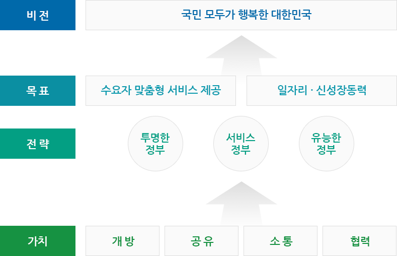

소개


정부 3.0
-
정부 3.0 이란?
공공정보를 적극 개방 공유하고, 부처간 칸막이를 없애고 소통 협력함으로써 국정과제에 대한 추진동력을 확보하고 국민 맞춤형 서비스를 제공함과 동시에 일자리 창출과 창조경제를 지원하는 새로운 정부운영
패러다임
-
방향
공공정보의 개방과 공유, 정부-국민간의 소통과 협력을 확대 국가보다 국민 개개인의 행복에 초점을 두어 맞춤형 서비스 제공 민간의 창의와 활력이 증진되는 혁신 생태계 조성 부처간 칸막이를 뛰어넘는 통합형 정부운영 지향 정부가 직접 개입하지 않고, 민간의 능동적 참여를 유도
<정부운영 패러다임의 변화 방향>
<정부운영 패러다임의 변화 방향> 구분 정부1.0 정부2.0 정부3.0 운영방향 정부 중심 국민 중심 국민 개개인 중심 핵심가치 효율성 민주성 확장된 민주성 참여 정부 중심 제한된 공개.참여 능동적 공개.참여 개방.공유.소통.협력 행정 서비스 일방향 제공 양방향 제공 양항뱡.맞춤형 제공 수단(채널) 직접 방문 인터넷 무선 인터넷 스마트 모바일
- 비전과 전략 
-
중점 추진과제
- 소통하는
투명한 정부 -
1. 공공정보 적극 공개로 국민의 알 권리 충족
2. 공공데이터의 민간 활용 활성화
3. 민 · 관 협치 강화
- 일 잘하는
유능한 정부 -
4. 정부 내 칸막이 해소
5. 협업 · 소통 지원을 위한 정부 운영 시스템 개선
6. 빅데이터를 활용한 과학적 행정 구현
- 국민 중심의
서비스 정부 -
7. 수요자 맞춤형 서비스 통합 제공
8. 추진 및 기업활동 원스톱 지원 강화
9. 정보 취약계층의 서비스 접근성 제고
10. 새로운 정보기술을 활용한 맞춤형 서비스 창출
- 소통하는